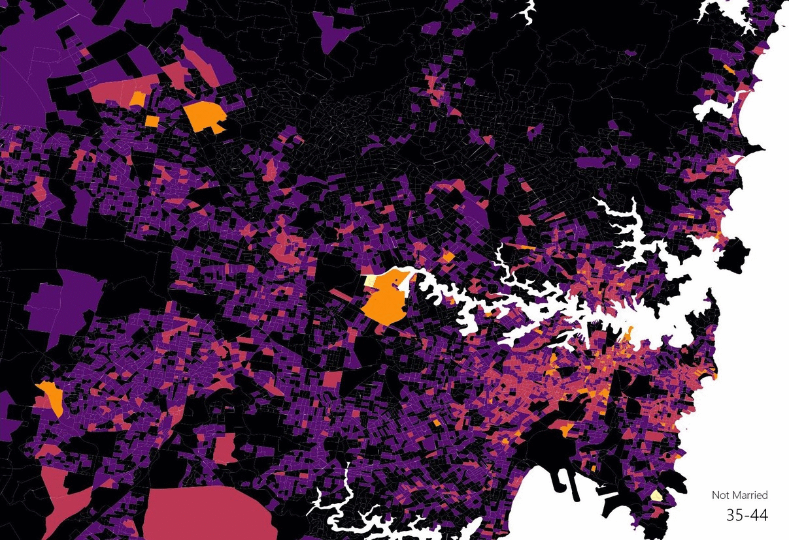
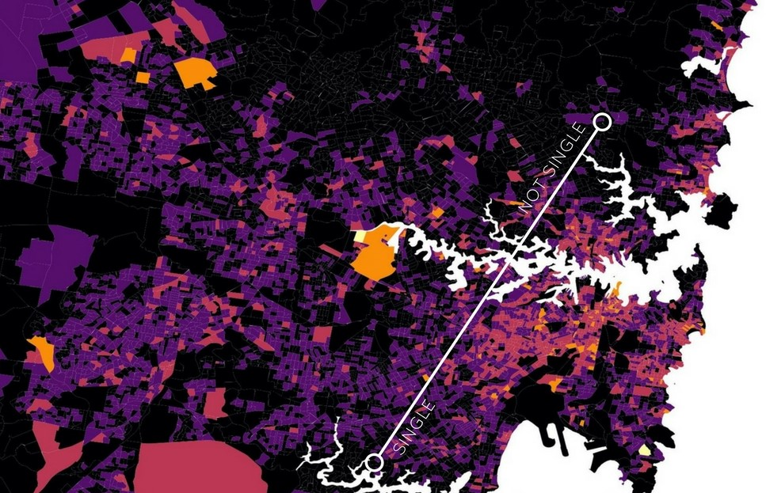
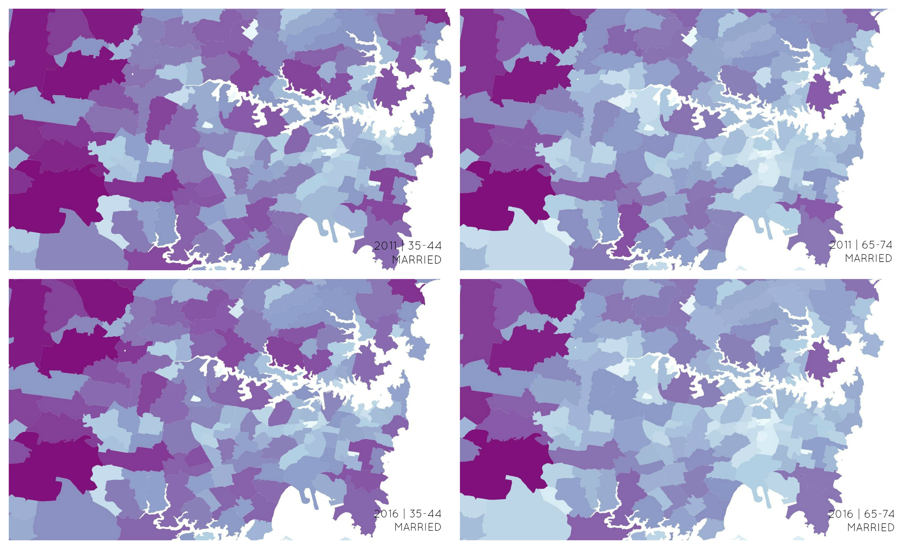

INTRODUCTION | G05 is a data set about the martial status of people in New South Wales, ranging from ages 15 and above. It categorises their status as Never married, Married, Separated, Divorced or Widowed in different age groups. The data shows the number of people under each category and where they are located in New South Wales which can be seen collectively through marital status and/or age.
PUBLIC AND PRIVATE SECTOR |
There are two government departments which would be interested in the G05 data set:
The Department of Social Services
The Department of Social Services is responsible for a range of different subject, from communities to disability to seniors and housing support. In correlation to this data set, they would be interested in seeing where families are situated around the state as well as where the senior citizens populate.In particular with senior citizens, it is important for the government to know where they are generally located to be able to provide them with their essential services and support. For example, looking at the figure above, it shows that people over the age of 75 who have never been married, separated, divorced or widowed are located. With this information, the government would be able to monitor and provide the necessary support in terms of health care and finance issues.
The Department of Infrastructure and Regional Development
Similarly, the Department of Intrastate and Regional Development can also use the data and see where people are to plan and design public transport. For example, understanding that people are moving out west, there could be more frequent train lines.
In terms of the private sector, the data set G05, would be of interest to health insurance companies. They are able to target the location of senior citizens and offer them with health services and support they may or not be provided by their family members of the government.
SPACE | The marital status of people influences how people use space. In comparison to someone single, married couples need more space, especially if they want children, the idea is to have a house with a backyard for the children to play in or to do chores such as laundry. Therefore, as seen in the figure below, married people are moving out west where houses and land are available compared to the city area. Moreover, the city area is filled with more single people who are living in apartments which require less land space and can be built vertically. Instead of a backyard, balconies are more favourable to those who are single. In addition, areas near the city have attractions which are suited for single people. According to Elden Mcdonald (2016), areas such as Darlinghurst, Surry Hills and Redfern are the “hip-burbs” of Sydney for people to hang around.
LATTE LINE | Looking at the data graphically, there is a clear distinction between areas which are populated with single people, or not married, and those who are married. It can be see single citizens are centred around the city which can be because it could be closer to work, there are more activities and attractions appealing as social gatherings and apartment spaces are enough. On the other hand, married people of NSW are moving out away from the city where there are more space in terms of housing and land for backyards, activies such as family outings and grocery shopping is cheaper and convenient, in comparison to the city arera, there are more varieties of schools. Also, creating a family is costly, considering the expenses that would be spent on the children it is ‘cheaper’ and convenient to buy a house out west rather than an apartment in the city suburbs.
TIME | Between 2011 to 2016 there has not been much change in the movement of married people and single people and where they decide to locate.
CHANGE | As the data form 2016 show, there is a clear distinction between where married and non-married people generally locate. However, as time goes the influence of property prices and changing generations and values, I believe, areas away from the city will become more diverse in age and martial status. There are advantages and disadvantages for this change, for example, it is hard to imagine an area that is suited to both apartments and houses while catering to the different needs of those who are not married and ones that are. On the other hand, if the elder citizens are able to be in locations that are well populated and enough support and care is provided for them, that would be a good change.
There is something interesting about looking at how space changes through the New South Wales. You can image that in the city area which is full of activates are populated with single people and high-rise buildings like apartments which use less floor space. On the other hand, as we spread away from the city, houses, flats and unit appear to cater towards married people and those with children, in other words, floor space increases and building height decreases.